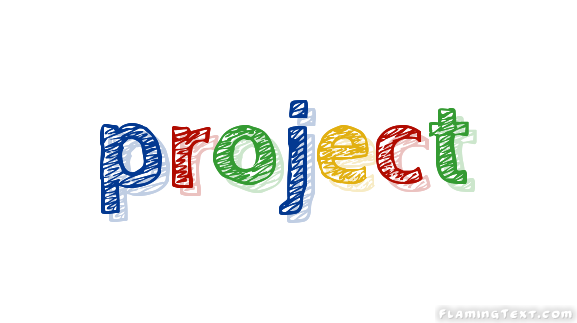
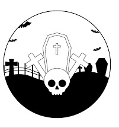

I’m Ayushi Rajput and currently doing my B.Tech from Banasthali Vidyapith.
I’m originally from Meerut,Uttar Pradesh.
My Aim is to escalate my technical skills so that I can contribute towards the development of technology.
BIO
A little more about me.
I’ve always loved spending way too much time on the computer, and spent my teens tinkering with Photoshop and building crappy websites.
But after getting a computer science degree, I realized writing compilers wasn’t for me and decided to switch majors completely and learn Mandarin instead.
Yet as it turns out, my path would lead back to computers: after moving to China in 2006, I ended up quitting my language studies and getting a job in Beijing as a web designer.
After coming back to France in 2007, I became a freelance UI designer, working with companies such as Hipmunk, Intercom, and Le Monde.
A few years later, I decided what I really wanted was to create my own products, and set out to re-learn web programming.
After moving to Japan in 2012 for my wife’s studies, I now live in Kyoto and work on running developer surveys.

Code
The duct tape that keeps the world together.
Vulcan.js
An open-source full-stack app framework based on React, GraphQL, Meteor, and MongoDB. A.k.a. the “Rails for JavaScript”.
State Of JavaScript
I got tired of all this talk of “JavaScript fatigue”, so I created a survey to get more data about recent trends in the JavaScript community.
Discover Meteor
I learned the Meteor JavaScript framework to build Telescope, and decided to reinvest the knowledge I had just acquired to co-author a book together with Tom Coleman.
State Of CSS
The State of JS survey’s little sister, all about CSS and HTML.

Projects
1.Get Idea; 2. Launch; 3. ???; 4. Profit..
Sidebar
An open-source full-stack app framework based on React, GraphQL, Meteor, and MongoDB. A.k.a. the “Rails for JavaScript”.
Community Building Guide
I got tired of all this talk of “JavaScript fatigue”, so I created a survey to get more data about recent trends in the JavaScript community.
Hacker News Kansai
I learned the Meteor JavaScript framework to build Telescope, and decided to reinvest the knowledge I had just acquired to co-author a book together with Tom Coleman.
Design Portfolio
The State of JS survey’s little sister, all about CSS and HTML.
Writing
Like coding, but with fewer bugs.
A Study Plan To Cure JavaScript Fatigue
2016
An open-source full-stack app framework based on React, GraphQL, Meteor, and MongoDB. A.k.a. the “Rails for JavaScript”.
The Product Spectrum
2014
I got tired of all this talk of “JavaScript fatigue”, so I created a survey to get more data about recent trends in the JavaScript community.
What Kind Of Logo Do You Get For $5?
2014
I learned the Meteor JavaScript framework to build Telescope, and decided to reinvest the knowledge I had just acquired to co-author a book together with Tom Coleman.
The Spiderweb Strategy
2014
The State of JS survey’s little sister, all about CSS and HTML.
Podcasts
Now featuring 20% more French accent.
UI Breakfast Podcast
2016
Episode 40: Learning Through Projects
Discover Meteor Podcast
2015
5 episodes covering various aspects of Meteor.
Product People
2014
EP63: How things get popular
Upfront Podcast
2013
Episode 12 - MeteorJS and Side Projects
React Native Radio
2016
43 The State of JavaScript and React Native.
Binpress Podcast
2015
Episode 39
The Changelog
2013
Discover Meteor.js
The Industry
2012
#10: Facebook IPO’d, The Toolbox launches, Parse for iOS and Android, and Say Hello to Octicons

Graveyard
You gotta learn to let them go.
Screenings
2015
An attempt at building a directory of design talks. On life support due to a lack of updates.
The Toolbox
2014
A directory of design resources. The domain expired, and then got a second life thanks to a new owner.
Folyo
2011
My first “startup”. After many years trying (and failing) to make it work, sold the site to the talented Workshop crew.
BJJBot
2015
A directory of Brazilian Jiu-Jitsu videos that never quite took off.
SachaGreif.com
2012
The previous version of this site, a now-abandoned WordPress blog.
Patternify
2011
A simple pattern generation tool, and one of my first ever side projects. Still works!